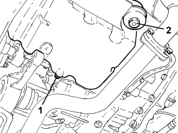

0010T12 ENGINE OIL AND FILTER - REPLACE
- Path
- Procedures > 00 MAINTENANCE > 0010 NEW VEHICLES AND MAINTENANCE > 0010T VEHICLE FLUIDS > 0010T12 ENGINE OIL AND FILTER - REPLACE
- Kind
- repair procedure (removal / refitting; the operation number is the code)
- Applies to
- all engines; all production periods
- Interactive page
- https://sloeber94.github.io/elrnDB-aBrrSpdr/en/#/946001759
Applies to: engines: 2.2 JTS; all production periods
- Position the vehicle on a lift.
- Remove the filler cap with the engine hot.
- Release the engine oil dipstick.
- Remove the engine oil cover using a suitable tool.
- Remove the seal.
- Extract the engine oil filter cartridge.
- Undo the drain plug in the crankcase sump and leave the oil to drain into a suitable container.
- Clean the drain plug and tighten it complete with a new gasket to the recommended torque.
Component | Fastening | dia | Value (daNm) | Validity |
|---|---|---|---|---|
Engine oil drain plug | - | M12 | 2.2 ÷ 2.7 | 2.2 JTS |
- Place a new engine oil filter cartridge in its housing.
- Place the engine oil filter cover complete with a new gasket in its housing and tighten it to the recommended torque using the tool.
Component | Fastening | dia | Value (daNm) | Validity |
|---|---|---|---|---|
Engine oil filter cover | - | - | 2.3 ÷ 2.8 | 2.2 JTS |
- Refill the engine lubrication circuit with the recommended oil.
Component | Type | Description | Classification | Qty. | Validity |
|---|---|---|---|---|---|
Engine lubrication circuit | Oil [l] | SELENIA STAR | SAE 5W-40 - FIAT 9.55535-M2 | 5.4 | 2.2 JTS 3.2 JTS |
- Check that the engine oil level is correct using the dipstick.
- Fit the filler cap, let the engine idle for about 2 minutes, switch off the engine and then wait for several minutes.
- Check the oil level and make sure there are no leaks.
- Remove the vehicle from the lift.
Applies to: engines: 3.2 JTS; all production periods
- Position the vehicle on a lift.
- Remove the filler cap with the engine hot.
- Release the engine oil dipstick.
1. Undo the drain plug in the crankcase sump and leave the oil to drain into a suitable container.
2. Undo the oil filter cover and remove the filter element.

Applies to: engines: 3.2 JTS; all production periods
- Clean the drain plug and tighten it complete with a new gasket to the recommended torque.
Component | Fastening | dia | Value (daNm) | Validity |
|---|---|---|---|---|
Engine oil drain plug | - | - | 2.0 | 3.2 JTS |
- Place the new filter element in position.
- Lubricate the thread of the filter element cover with engine oil and tighten it to the recommended torque.
Component | Fastening | dia | Value (daNm) | Validity |
|---|---|---|---|---|
Engine oil filter element cover | - | - | 2.5 | 3.2 JTS |
- Refill the engine lubrication circuit with the recommended oil.
Component | Type | Description | Classification | Qty. | Validity |
|---|---|---|---|---|---|
Engine lubrication circuit | Oil [l] | SELENIA STAR | SAE 5W-40 - FIAT 9.55535-M2 | 5.4 | 2.2 JTS 3.2 JTS |
- Fit the filler cap, let the engine idle for about two minutes, switch off the engine and then wait for several minutes.
- Check the oil level and make sure there are no leaks.
- Remove the vehicle from the lift.
Applies to: engines: 2.4 JTD 20v; all production periods
- Remove the filler cap with the engine hot.
- Release the engine oil dipstick.
Op. 1084B30 ENGINE OIL FILTER - R.R
- Undo the drain plug in the crankcase sump and leave the oil to drain into a suitable container; refer to
Op. 1020A30 ENGINE OIL DRAIN PLUG - REPLACE
- Refill the engine lubrication circuit with the recommended oil.
Component | Type | Description | Classification | Qty. | Validity |
|---|---|---|---|---|---|
Engine lubrication circuit | Oil [l] | SELENIA WR | SAE 5W-40 - FIAT 9.55535-M2 | 6.4 | 2.4 JTD 20V |
- Check that the engine oil level is correct using the dipstick.
- Fit the filler cap, let the engine idle for about 2 minutes, switch off the engine and then wait for several minutes.
- Check the oil level and make sure there are no leaks.
Topics linked from this page (2)
Topics that link to this page (9)
- 0010K30 30,000KM SERVICE
- 0010K60 60,000KM SERVICE
- 0010K90 90,000KM SERVICE
- 0010M20 120,000KM SERVICE
- 0010M50 150,000KM SERVICE
- 0010M80 180,000KM SERVICE
- 0010T10 CHANGE ENGINE OIL
- 1004B10 POWER UNIT WITH MANUAL GEARBOX - R.R
- 1020A26 CRANKCASE SUMP - R.R CLEAN MATING SURFACES AND APPLY SEALANT FOR VEHICLES WITH AIR CONDITIONING